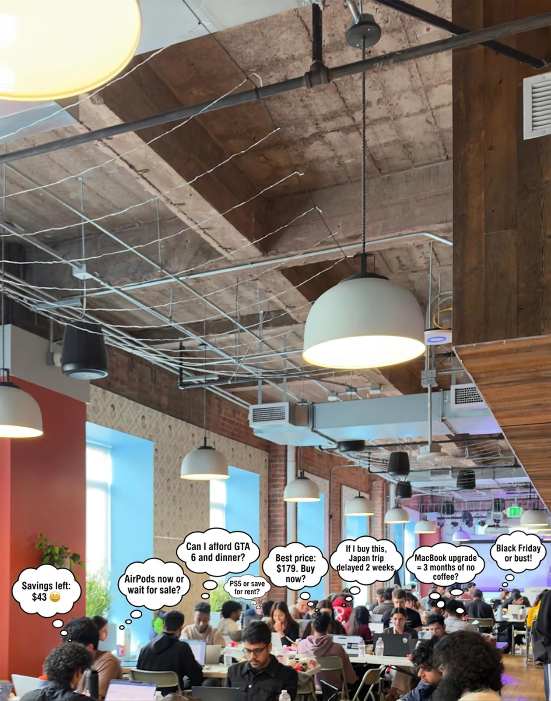
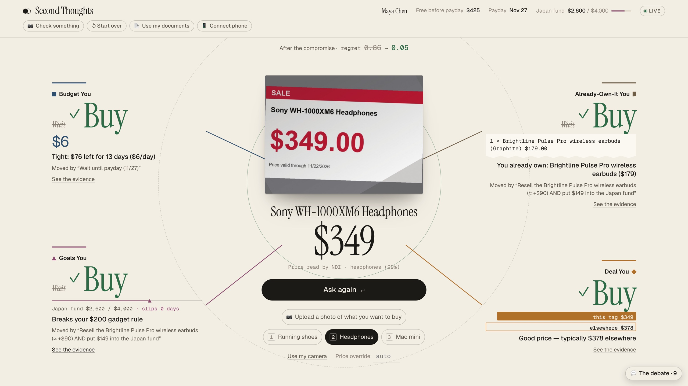
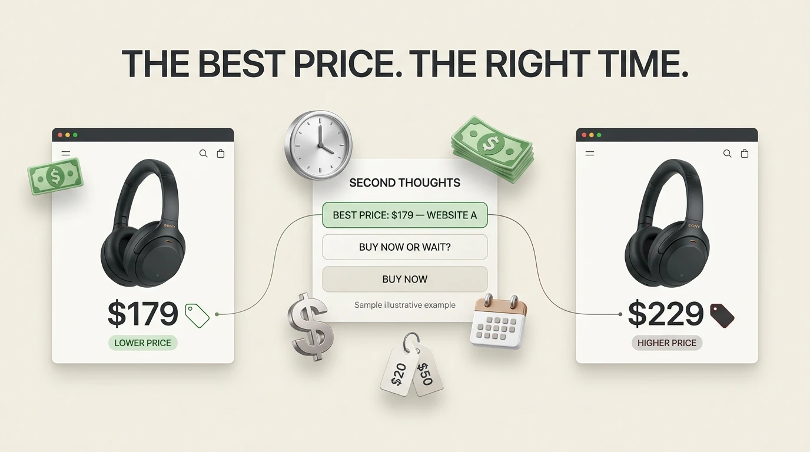

You want it.
You wantBut does all of you?
Every purchase is a conversation between who you are and who you want to become.

Four selves.
One decision.
Not another chatbot.
A council of perspectives that can disagree. Each self reads only its own documents and cites the line it relied on.
The Accountant
“Can I actually afford this?”
The Minimalist
“Do I already have something similar?”
The Planner
“Does this delay something bigger?”
The Bargain Hunter
“Is this the right price?”
- DocumentsBank statement, pay stub, savings sheet, rules, receipts
- NDIExtracts each fact with its page and line, once
- Four selvesEach sees only its own facts. The Bargain Hunter checks live prices
- DrexOne call per self: regret, stake, the line to cite
- VerdictVeto, pooling and every number are computed in code
Built with Intern as our coding agent, working from AGENTS.md as its spec. Intern also runs headless as the Clerk, which explains split verdicts.
Watch them disagree.
One purchase. Four opinions.
An explainable verdict.
Yes.
With a condition.
Resell the earbuds you already own (about +$90) and put $149 into the Japan fund.
Round one: three selves said wait, The Bargain Hunter said buy. Pooled regret 0.86 → 0.05 with the trade-off.

Screenshot and numbers: the tested run of Sony WH-1000XM6 at $349, Nov 14, 2026, decided in 0.69 s. Maya is a fictional persona.
The best price.
The right time.

The best purchase is
the one you understand.